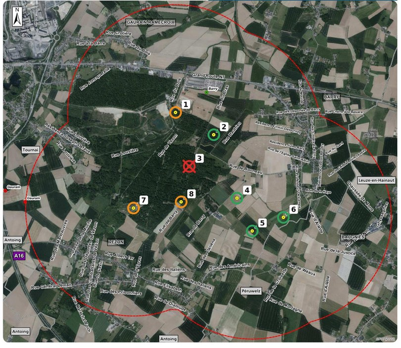

Recours devant le Conseil d’État
En coursLe Comité introduit un recours en annulation contre l’autorisation des sept éoliennes, afin de faire examiner la légalité de la décision ministérielle.
Porté par la CCB et IPALLE, le projet prévoit l’implantation de sept éoliennes de 230 mètres de haut, en milieux agricoles et forestiers, notamment au sein et aux abords du bois de Barry. Initialement prévu pour huit éoliennes, le projet a été partiellement refusé en mars 2026, avant d’être largement autorisé par le ministre en septembre, malgré la proposition de refus de l’administration wallonne sur recours.
4 7
éoliennes autorisées, avant et après la décision sur recours
La décision de septembre 2026 répond à plusieurs recours. Celui des porteurs du projet obtient en grande partie gain de cause.

En bout de pale, chaque éolienne mesure près de trois fois la hauteur des clochers de la cathédrale de Tournai.
De la première présentation publique à aujourd'hui. Les dates proviennent des documents officiels de la procédure.
Le 16 octobre 2023, lors de la réunion d’information préalable (RIP), CCB et IPALLE présentent leur projet de huit éoliennes, alors annoncées à 200 mètres de hauteur, entre les villages de Barry et Vezon, en milieu forestier et agricole. [RID, pp. 31–33]
La présentation met l’accent sur les objectifs du projet : couvrir par autoconsommation environ 30 % des besoins électriques de la cimenterie CCB, contribuer à sa décarbonation et à sa compétitivité.
Elle souligne également les atouts du site de Barry-Vezon pour l’implantation d’éoliennes, notamment du fait de son classement en zone de dépendances d’extraction au plan de secteur. [RID, pp. 18–29, 31–33 ; RIT, p. 8]
La réunion attire une salle comble et suscite de nombreuses questions sur les incidences potentielles du projet, notamment pour les habitants, le paysage et la biodiversité. Ces incidences doivent encore être évaluées dans le cadre de l’étude d’incidences sur l’environnement (EIE). [RID, pp. 34–60]
Le 26 août 2025, les sociétés CCB et IPALLE demandent un permis pour huit éoliennes de 230 mètres.
L'EIE met notamment en évidence l’implantation du projet, d’une part, au sein et aux abords du bois de Barry, une forêt ancienne de feuillus à haute valeur écologique, et, d’autre part, dans un Périmètre d’Intérêt Paysager (PIP) que l’ADESA décrit comme un paysage qui « semble avoir été épargné de toute atteinte ». [EIE, pp. 133–134, 387–389, 405]
Les contraintes biologiques, paysagères et humaines sont considérables. L’enquête publique recueille 59 remarques écrites et une pétition de 398 signatures contre le projet ; les avis officiels oscillent entre accords sous conditions, réserves et refus. [DMR, pp. 3–11]
Parallèlement, le 27 novembre 2025, alors que l’instruction est toujours en cours, le Gouvernement wallon accorde plus de 46 millions d’euros d’aides wallonnes et européennes au projet phare CCBeNETZERO, dont le parc éolien fait explicitement partie. [GOW ; COM]
Le 3 mars 2026, les fonctionnaires technique et délégué rendent leur décision. Face aux bénéfices évidents et aux fortes contraintes, l’administration wallonne opte pour un compromis :
Résultat : les quatre éoliennes en milieu forestier sont refusées, les quatre en milieu agricole autorisées. [PUP, p. 86]
Ce compromis ne satisfait personne. Trois recours de riverains, dont un signé par plus de 100 personnes, contestent les quatre éoliennes autorisées. À l’inverse, le recours des demandeurs vise à récupérer les quatre éoliennes refusées. [DMR, pp. 10–11]
L’ensemble de l’arbitrage du 3 mars est donc remis sur la table.
Non seulement le DNF maintient son avis « strictement défavorable » pour les quatre éoliennes forestières refusées, mais il conteste aussi la manière dont l’administration a traité les analyses complémentaires demandées. [RSR, pp. 44–45]
Dès son premier avis, le DNF avait demandé une analyse préalable des impacts sur les espèces protégées. Or, le permis du 3 mars a été accordé sans disposer de cette analyse. [RSR, pp. 43–44, 47]
Dans son nouvel avis, le DNF souligne l’enjeu de cette analyse : sans elle, il n’est pas possible de déterminer si le projet aura un impact sur les espèces protégées et, le cas échéant, si cet impact nécessite une dérogation à la Loi sur la Conservation de la Nature. Or, une telle dérogation doit être obtenue avant la délivrance du permis. [RSR, p. 47]
Le problème change alors de dimension. Il ne s’agit plus seulement d’arbitrer entre les bénéfices du projet et ses incidences environnementales. C’est la possibilité même de délivrer légalement le permis qui est désormais en question.
Le 11 août, l’administration wallonne chargée de l’instruction des recours rend ses conclusions au ministre :
« Légalement, il n'est donc pas possible de délivrer le permis unique sollicité dans l'état actuel du dossier. » [RSR, p. 7]
« Sur la base des éléments recueillis lors de l'instruction […], les fonctionnaires technique et délégué compétents sur recours proposent à Monsieur le Ministre d'INFIRMER la décision querellée et de REFUSER le permis sollicité. » [RSR, p. 7]
Le ministre dispose de trente jours pour statuer.
Le 4 septembre 2026, le ministre François Desquesnes autorise sept des huit éoliennes demandées, malgré la proposition de refus formulée par l’administration wallonne. [DMR, p. 95]
Pour motiver sa décision, le ministre retient une appréciation différente de celle de l’administration sur plusieurs points essentiels :
Cinq jours après sa décision, François Desquesnes présente publiquement les arguments qui ont motivé son arbitrage.
Il invoque la « cohérence particulière » du projet au regard du « caractère industriel » du site et de son « évolution future », les adaptations destinées à réduire les incidences sur les espèces protégées, ainsi que la contribution du parc à la décarbonation de l’industrie wallonne. Selon le ministre, sa décision reflète une « approche de proportionnalité et d’équilibre » entre production d’énergie renouvelable et contraintes environnementales. [NOT]
Les habitants des villages concernés se réunissent pour faire le point sur la décision ministérielle et examiner les suites à donner au dossier, notamment la possibilité d’un recours devant le Conseil d’État.
Le 28 octobre, le collège communal de Tournai décide, à la majorité, d’intervenir devant le Conseil d’État en cas de recours de riverains.
Dans son avis « fortement réservé » du 29 janvier 2026, la Ville soulignait notamment les incidences environnementales importantes du projet.
Cependant, dans sa communication actuelle, la Ville met principalement l’accent sur les nuisances pour les habitants, sans expliquer pourquoi les préoccupations environnementales, pourtant toujours d’actualité, ne sont plus évoquées. [NOT]
Le Comité des Villages entre Bois et Plaine (ASBL) introduit un recours en annulation devant le Conseil d’État contre la décision ministérielle autorisant sept éoliennes à Barry-Vezon.
Ce recours vise à contester la légalité de l’autorisation, notamment au regard des objections environnementales et juridiques soulevées au cours de la procédure.
Nos actions associent recherches, démarches juridiques, information des habitants et veille sur l’évolution de notre territoire.
Le Comité introduit un recours en annulation contre l’autorisation des sept éoliennes, afin de faire examiner la légalité de la décision ministérielle.
Nos groupes de travail approfondissent les enjeux du territoire : biodiversité, eau, paysage, santé, carrière et aménagement du territoire.
Réunions, toutes-boîtes et site internet : nous partageons les informations, les documents et les avancées de nos recherches.
Nous suivons l’évolution des projets et des travaux susceptibles d’affecter notre territoire. Vos observations sur le terrain sont les bienvenues.
Dernière mise à jour : 5 novembre 2026